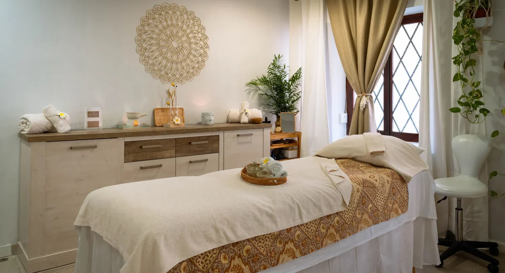

01
Masajes y terapias de bienestar · Santa Cruz de Tenerife
Donde el cuerpo suelta lo que la mente carga.
Isabel te recibe con cita previa en su estudio de la Avenida de San Sebastián. Sesiones con calma, adaptadas a lo que tu cuerpo pide.
Respira y baja
Shanti significa paz en sánscrito. Isabel lo traduce con las manos: escucha, adapta cada sesión y se toma el tiempo que tu cuerpo necesita.
0
valoración en Google
0
reseñas de sus clientas y clientes
0
terapias principales
Una sesión, pétalo a pétalo
0%
I · La llegada
Cruzas la puerta y el ruido de la avenida se queda fuera.
Las terapias
01 / 04
02
03
04
Reservar es sencillo.
Masaje relajante
Facial y corporal
Masaje descontracturante
Para la tensión acumulada
Maderoterapia
Técnica con maderas
Lifting facial japonés
Rostro
El precio se confirma al reservar, según la duración y el tratamiento. Escribe por WhatsApp e Isabel te responde con hueco y tarifa.
Una experiencia que el cuerpo recuerda.
Mueve el ratón

Parar también es cuidarse.
Lo que cuentan al salir.
5,0 · 92 reseñas en Google
«Isabel takes great care of her customer. From the first moment I felt very comfortable and pampered. Very professional, clean and relaxing. Highly recommend!!»
«Isabel shows real care and attention to detail, she helped me tremendously with my contracted muscles. She’s a very patient, kind and pleasant person who creates a very relaxed atmosphere in her studio. I highly recommend booking a massage with her if you’re in Tenerife.»
«Isabel is a wonderful person with magical hands - I visited her for a face and body massage and left the studio rejuvenated. The place is very relaxing and she takes time for the treatment. Would definitely recommend her:)»
Cita previa · Santa Cruz de Tenerife
Tu momento de paz empieza aquí.
Reservar por WhatsAppo llama al 642 40 38 86
El estudio
Av. de San Sebastián, 80
38005 Santa Cruz
de Tenerife
Contacto
Horario
Lunes a viernes10:00 a 18:00
Sábado y domingoCerrado